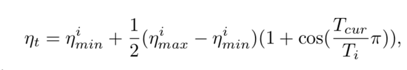
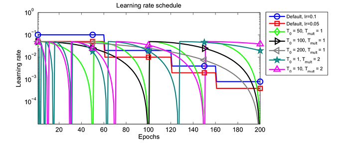
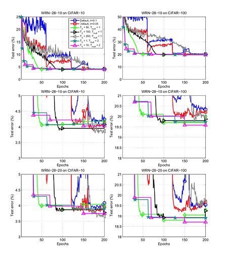
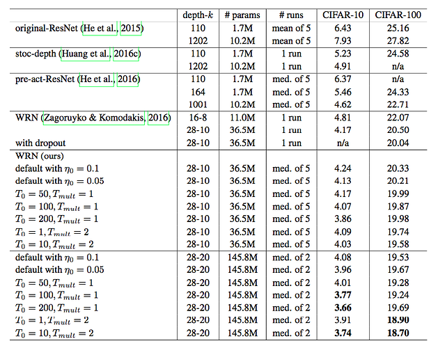
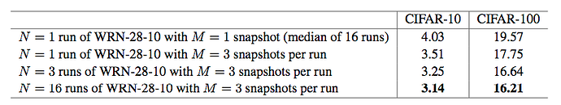
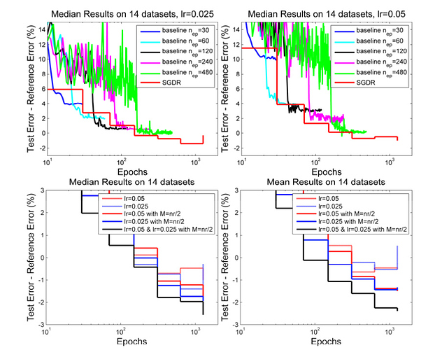

SGDR: Stochastic Gradient Descent with Warm Restarts
URL: https://arxiv.org/abs/1608.03983 Github: https://github.com/loshchil/SGDR
【Summary】ICLR2017一篇关于学习率的论文，论文的核心比较直接就是提出了基于cosine的学习率 warm restart逻辑，然后论文的大篇幅都是围绕这个learing rate进行了比较多的实验。论文所提的SGDR通常只需要原有模型1/2-1/4的训练epoch就可以得到差不多甚至更好的效果。
论文所提的cosine learning rate 公式如下，nmin、nmax就是学习率的区间，Tcur表示当前经过多少个epoch了，Ti可以理解为周期。因为从下面这个公式当Tcur = Ti时，nt = nmin：

作者在具体实验的时候其实还涉及到另一个参数nmult代表周期的系数，下图是不同的Ti和Tmult画出来的示意图：

下图是作者在CIFAR-10和CIFAR-100数据集上用Wide Residual Neural Network（depth=28&width=10）做的实验，效果很直观，SGDR收敛速度明显比较快：

下表是具体的实验结果，从结果上看效果也是不错的：

此外作者也从ensemble、downsampled imagenet dataset的角度做了不同的实验，结果也都很好：
Ensemble:

Downsampled imagenet dataset:

论文所提的这种warm restart逻辑感觉还是很合理的，可以优化梯度下降中鞍点以及局部最小解的问题，有助于模型能快速收敛。